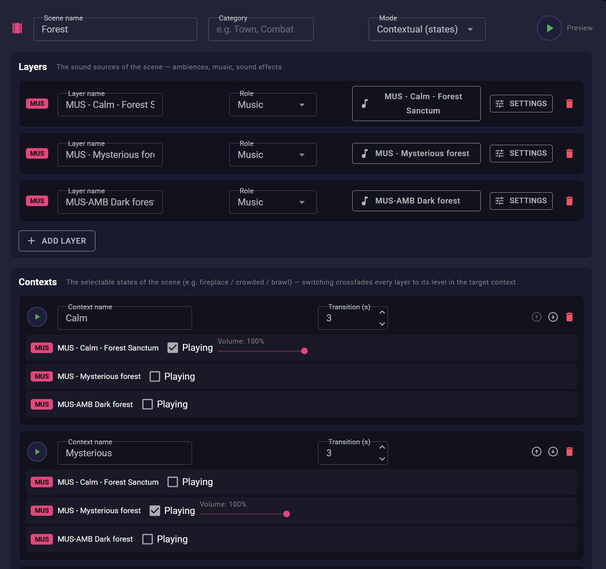

Dépôt GitHub
Dépôt GitHub

L'éditeur de scène
Une scène est faite de couches et de contextes, et les deux s'éditent sur la même page. Chaque couche pointe vers un élément de votre bibliothèque et garde ses propres réglages. Chaque contexte retient quelles couches jouent et à quel volume, avec le temps que doit prendre le fondu. Passer de Calme à Mystérieux pendant la partie ne demande alors qu'un clic.